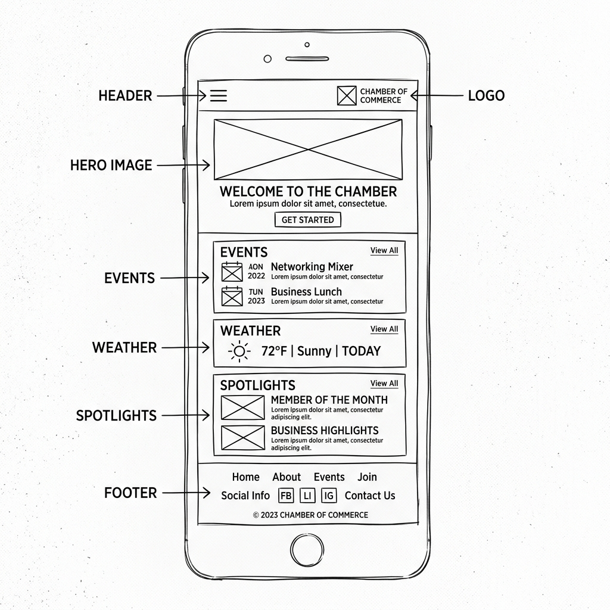
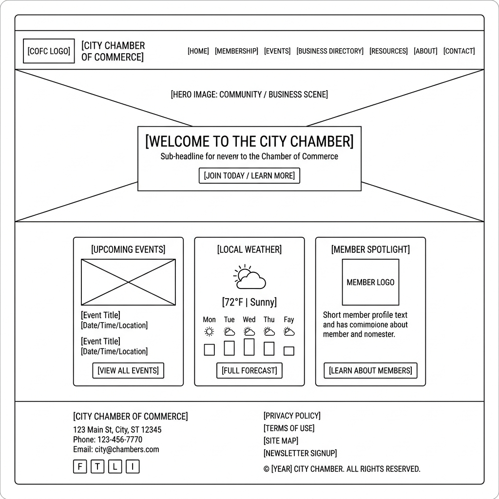

1 Site Name
The name Chamber of Commerce was chosen because it instantly communicates the site's core purpose: serving as the digital hub for a local business community organization. "Chamber of Commerce" is a universally recognized term that implies professional networking, business support, and community advocacy — all key goals of the site. The name is authoritative, trustworthy, and immediately understandable to both local business owners and residents seeking information about local commerce.
2 Site Purpose
The Chamber of Commerce website will serve multiple important purposes for the local business community:
- Business Directory: Provide a searchable, filterable directory of local member businesses including contact information, membership level, and website links, so residents can easily find and support local companies.
- Membership Recruitment: Enable local businesses to apply for Chamber membership online through a structured form, clearly explaining the benefits of Bronze, Silver, and Gold membership tiers.
- Community Information Hub: Aggregate local weather forecasts, upcoming community events, and featured business spotlights on the home page to keep residents and business owners informed and engaged.
- Economic Discovery: Showcase unique aspects of the local area — including attractions, demographics, and economic facts — to encourage tourism, relocation, and new business investment.
3 Scenarios
The following scenario questions represent the typical needs and motivations of our target audience — local business owners and community residents — when they visit the Chamber of Commerce website:
-
"I just opened a bakery downtown. How do I officially join the Chamber of Commerce and what benefits will my business receive as a member — especially for networking events and promotional visibility?"
-
"I'm looking for a reliable local electrician recommended by other Chamber members. Can I search the business directory by category or name to find verified businesses in my area?"
-
"I'm thinking about relocating my company to this city. What are the local economic conditions, demographics, and community highlights that make this a good place to establish and grow a business?"
4 Color Schema
The Chamber of Commerce website uses a two-color primary palette of Deep Navy Blue and Amber Gold, complemented by a neutral off-white background. This combination conveys professionalism, trust, and community warmth.
#0b3d91
Used for: header background, footer background, section headings, nav bar, card title text, and primary buttons.
#fca311
Used for: call-to-action buttons, nav hover states, card accent borders, section highlights, and icon accents.
#f4f4f9
Used for: page body background, card input field backgrounds, and alternating row backgrounds in the directory.
#ffffff
Used for: card backgrounds, modal dialogs, form inputs, header text, and nav link text.
5 Typography
The site uses two complementary Google Fonts to balance authority and readability across all device sizes:
Heading Font — Applied to: page title, section headings (h1–h3), navigation links, card titles, and button labels
ABCDEFGHIJKLMNOPQRSTUVWXYZ · abcdefghijklmnopqrstuvwxyz · 0123456789
Weights used: 600 (semibold), 700 (bold), 800 (extrabold) · Rationale: Montserrat's geometric shapes project confidence and professionalism, ideal for a business organization's branding.
Body Font — Applied to: paragraph text, list items, form labels, footer text, and descriptive captions
ABCDEFGHIJKLMNOPQRSTUVWXYZ · abcdefghijklmnopqrstuvwxyz · 0123456789
Weights used: 400 (regular), 500 (medium), 700 (bold) · Rationale: Roboto is a versatile humanist sans-serif optimized for on-screen reading, ensuring body text is comfortable and scannable at all sizes.
6 Wireframe
The following wireframes illustrate the planned layout of the Chamber of Commerce home page for both mobile (small screen) and desktop (wider screen) viewports, following a mobile-first design approach.


Layout Description
- Mobile: Single-column stacked layout. Navigation collapses into a hamburger menu. Cards for Events, Weather, and Spotlights stack vertically for easy thumb scrolling.
- Desktop: Horizontal header with logo, site title, and inline navigation. Hero image spans full width. The three content cards (Events, Weather, Spotlights) appear in a three-column grid. Footer is split into two columns for info and metadata.